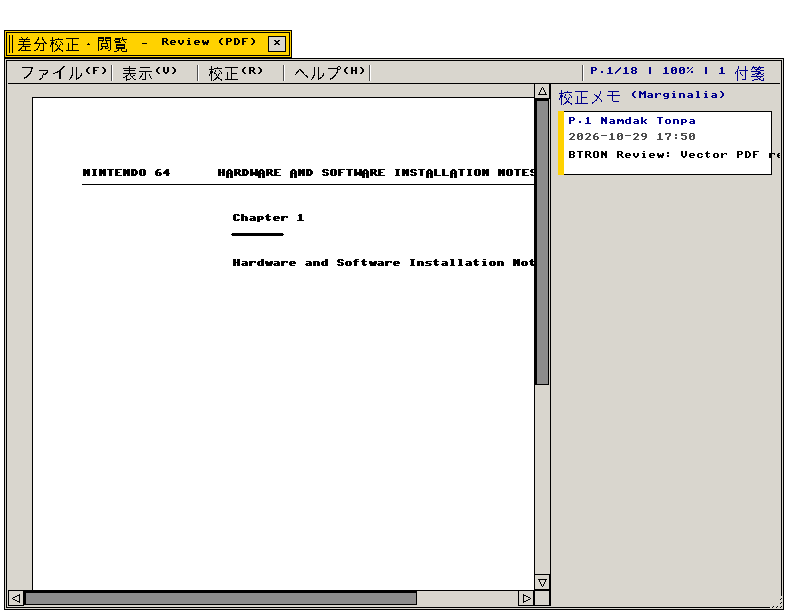
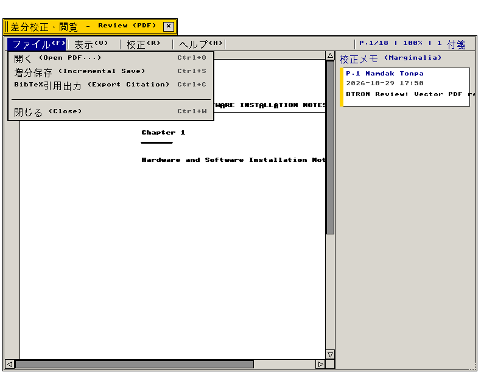
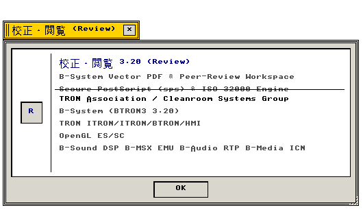

PDF閲覧・校正 (Reader / Review)
ベクトルPDF閲覧 · PostScript変換 · TAD付箋注釈 · BTRON3 3.20 準拠 · C99 実装
Reader アプリケーションの機能仕様および内部構造
"High-fidelity vector PDF reader, marginalia annotation, and PostScript presentation engine."
← アプリケーション一覧 (Applications Index)
PDF閲覧（Reader） — B-System native PDF application with vector Display Primitives (DP) rasterization, Forth-based PostScript transpilation, and two-way TAD Fusen (付箋) annotation embedding.
"Official technical specification for the Reader application within the B-System operating environment (see doc/txt/DPS.txt for full engine architecture)."
画面プレビュー (Screen Preview)

実機描画フレームバッファより自動抽出されたPDF閲覧・校正ウィンドウ (ベクトルPDFレンダリング・TAD付箋注釈・マージナリア欄・水平/垂直スクロールバー)

実機描画フレームバッファより自動抽出されたインアップメニュー展開画面 (ファイルメニュー: 開く・増分保存・BibTeX引用出力・閉じる)

実機描画フレームバッファより自動抽出されたNano About Boxダイアログ (Secure PostScript & ISO 32000 Engine)
概要 (Overview)
PDF閲覧（Reader）は、B-Systemの仕様に準拠したC99クリーンルーム実装アプリケーションです。
PostScriptファイル（doc/ps/n64.ps 等）から生成されたPDF文書および学術論文PDFを高精細ベクトル描画し、
余白へのTAD付箋注釈（Fusen）の埋め込み、およびISO 32000準拠の非破壊インクリメンタル更新書き戻しを提供します。
"High-fidelity vector PDF viewing with marginalia pin annotations, citation generation, and incremental PDF save."
1. メニュー構造と操作体系 (Menu Architecture & Operations)
Reader / Review が提供する標準メニューバー構造および操作体系の仕様。
"Standard menu bar hierarchy and interactive command bindings."
| メニュー項目 |
機能説明 (Functional Description) |
技術仕様・C99実装 (C99 Architecture) |
| 実身 (File) |
開く（Ctrl+O）、保存（Ctrl+S）、印刷（Ctrl+P）、閉じる（Ctrl+W） |
src/apps/pdf_reader.c, src/apps/review.c |
| 編集 (Edit) |
文字列選択、図形領域コピー、引用出力（Ctrl+C） |
pdf_tad_anno_export_citation |
| 表示 (View) |
等倍（Ctrl+1）、幅に合わせる（Ctrl+F）、拡大（+）、縮小（-）、次頁（PageDown）、前頁（PageUp） |
pdf_reader_render_page |
| 校正 (Review) |
付箋注釈ピン配置（Ctrl+N）、蛍光ペン強調（Ctrl+H）、抹消線 |
review_add_annotation / RT_MFUSEN |
| 案内 (Help) |
バージョン情報（Nano About Box 420×170px） |
app_menu_create_about_dialog |
2. 機能仕様とアーキテクチャ (Functional & Architecture Specifications)
| コンポーネント・機能名 |
動作概要と機能仕様 (Functional Specification) |
技術仕様・参照 (Architecture Reference) |
| Secure PostScriptエンジン |
Forthスタックマシンによる安全なPS Level 2インタプリタおよびPDFトランスパイラ（動的実行・JS/XFA排除）。 |
sps CLU, doc/txt/DPS.txt §1-§3 |
| ベクトル描画器 |
PDFオペレータ（m, l, c, re, S, f, Tj）をBTRON Display Primitives（DP）へ直結。 |
btron/dp.h, doc/txt/DPS.txt §6 |
| 付箋注釈統合 |
TAD実身・仮身モデルに基づく付箋注釈（RT_MFUSEN）とPDF /Annots 更新。 |
src/fs/, doc/txt/DPS.txt §7 |
| インクリメンタル更新 |
元PDFバイナリを変更せず、末尾に新規注釈オブジェクトと差分xrefを追記。 |
ISO 32000-1 Incremental Update |
関連コンポーネント (Related Components)